Part A: (Manually) Image Warping and Mosaicing
1. Shooting the Pictures
To make composite images, we first need some pictures! However, in this project, we don't be dealing with just any pictures; we need pictures with a projective transform between them. That is, we need to keep the COP (center of projection) of the camera fixed, or we won't be able to create accurate panoramas. To make these photos, I simply used my phone, but held the line where my camera is with my fingers while rotating the rest of the phone to get different perspectives.
The photos I'll be using in this part come from a side quest I made to Elmwood while procrastinating on doing the rest of this project. Enjoy!
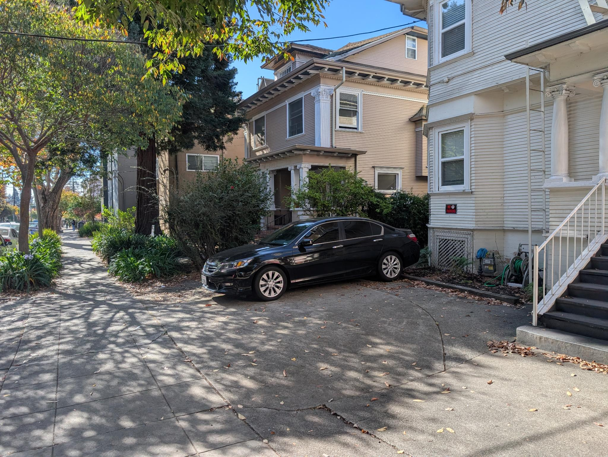
House mosaic, image 1
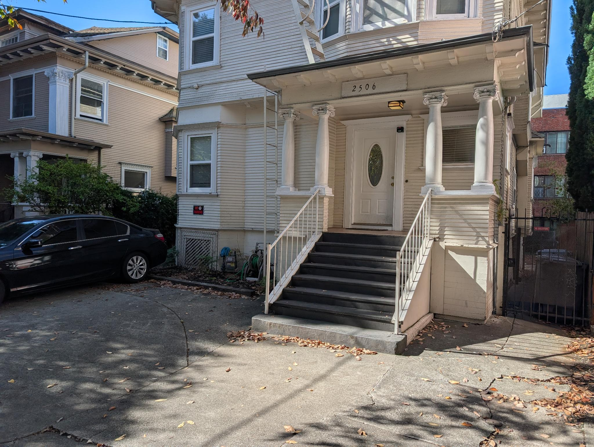
House mosaic, image 2
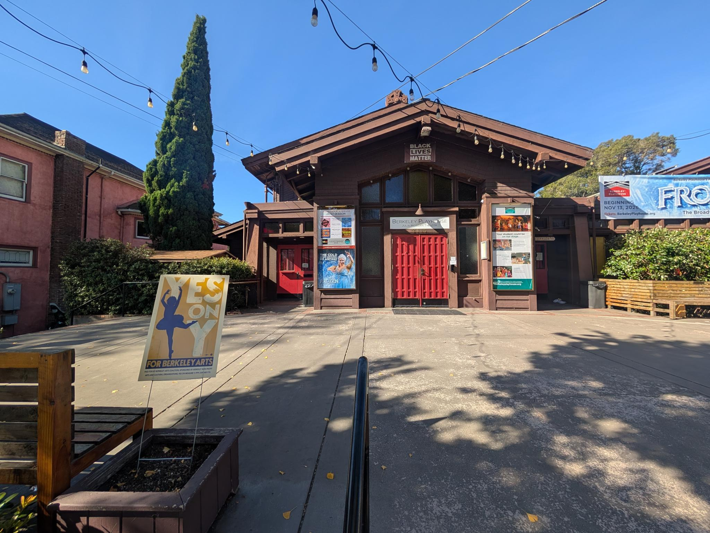
Theater mosaic, image 1
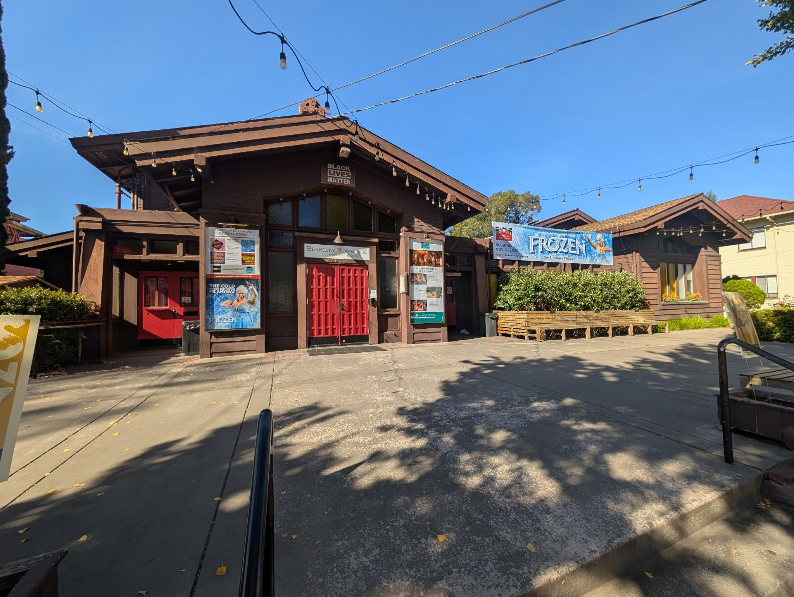
Theater mosaic, image 2
I'll be using these specific photos later on in the project as well.
2. Recovering Homographies
Before we can warp, we need to mathematically define the relationship between the two images. In this case, these pictures are related by a homography; defined by the matrix-vector multiplication:
\[ \begin{bmatrix} u \\ v \\ \lambda \end{bmatrix} = \begin{bmatrix} h_1 & h_2 & h_3 \\ h_4 & h_5 & h_6 \\ h_7 & h_8 & 1 \end{bmatrix} \begin{bmatrix} x \\ y \\ 1 \end{bmatrix} \]
(1)
As you can see, this transformation has 8 unknowns, so we need 8 different equations to solve for the unique homography. In this case, we can rearrange the matrix-vector equations for each pair of inputs \((x,y)\) and outputs \((u,v)\) — we call this a correspondence set — to get 2 equations:
\[ u = xh_1 + yh_2 + h_3 - uxh_7 - uyh_8 \]
(2)
\[ v = xh_4 + yh_5 + h_6 - vxh_7 - vyh_8 \]
(3)
If we have at least 4 correspondence sets, then we can set up these \(2\times4=8\) equations to solve for our 8 unknowns. A more efficient way of doing this, which I implemented, is to represent this as another matrix-vector multiplication, with the values \(h_1\) through \(h_8\) being in a vector which we need to solve for. This, in fact, allows me to use more than 4 correspondence sets and find a least-squares solution. This gives me better results because picking correspondence sets is finicky: sometimes I might select a point a pixel or two (or five) away from the "true" point in the ideal transformation. If I pick more than 4 correspondence sets, these errors I make should cancel out enough in the least-squares solution to get a more robust transformation, and thus a more seamless panorama. In my homography calculations, I use 11 correspondence sets per image mosaic.
Below I visualize some correspondence sets, along with my least-squares setup and final homography matrix.
Theater
\[ \scriptsize \begin{bmatrix} 106\\816\\359\\700\\471\\831\\687\\1056\\531\\718\\177\\357\\500\\423\\785\\664\\916\\484\\795\\871\\263\\563 \end{bmatrix} = \begin{bmatrix}
662 & 798 & 1 & 0 & 0 & 0 & -70172 & -84588 \\
0 & 0 & 0 & 662 & 798 & 1 & -540192 & -651168 \\
800 & 709 & 1 & 0 & 0 & 0 & -287200 & -254531 \\
0 & 0 & 0 & 800 & 709 & 1 & -560000 & -496300 \\
873 & 815 & 1 & 0 & 0 & 0 & -411183 & -383865 \\
0 & 0 & 0 & 873 & 815 & 1 & -725463 & -677265 \\
1047 & 1030 & 1 & 0 & 0 & 0 & -719289 & -707610 \\
0 & 0 & 0 & 1047 & 1030 & 1 & -1105632 & -1087680 \\
916 & 721 & 1 & 0 & 0 & 0 & -486396 & -382851 \\
0 & 0 & 0 & 916 & 721 & 1 & -657688 & -517678 \\
695 & 461 & 1 & 0 & 0 & 0 & -123015 & -81597 \\
0 & 0 & 0 & 695 & 461 & 1 & -248115 & -164577 \\
894 & 472 & 1 & 0 & 0 & 0 & -447000 & -236000 \\
0 & 0 & 0 & 894 & 472 & 1 & -378162 & -199656 \\
1126 & 663 & 1 & 0 & 0 & 0 & -883910 & -520455 \\
0 & 0 & 0 & 1126 & 663 & 1 & -747664 & -440232 \\
1256 & 468 & 1 & 0 & 0 & 0 & -1150496 & -428688 \\
0 & 0 & 0 & 1256 & 468 & 1 & -607904 & -226512 \\
1133 & 864 & 1 & 0 & 0 & 0 & -900735 & -686880 \\
0 & 0 & 0 & 1133 & 864 & 1 & -986843 & -752544 \\
743 & 607 & 1 & 0 & 0 & 0 & -195409 & -159641 \\
0 & 0 & 0 & 743 & 607 & 1 & -418309 & -341741
\end{bmatrix} \begin{bmatrix} h_1\\h_2\\h_3\\h_4\\h_5\\h_6\\h_7\\h_8 \end{bmatrix} \]
Solving this least-squares system gives the homography matrix:
\[ H_{\text{Theater}} = \begin{bmatrix} 4.1229 & -0.0462 & -2476.18 \\ 1.1779 & 2.7821 & -1365.55 \\ 1.541\times10^{-3} & -2.511\times10^{-5} & 1 \end{bmatrix} \]
House
\[ \scriptsize \begin{bmatrix} 1500\\722\\997\\487\\1800\\829\\1236\\509\\1056\\195\\1697\\187\\985\\838\\1314\\865\\1273\\583\\1562\\438\\980\\953 \end{bmatrix} = \begin{bmatrix}
666 & 740 & 1 & 0 & 0 & 0 & -999000 & -1110000 \\
0 & 0 & 0 & 666 & 740 & 1 & -480852 & -534280 \\
79 & 441 & 1 & 0 & 0 & 0 & -78763 & -439677 \\
0 & 0 & 0 & 79 & 441 & 1 & -38473 & -214767 \\
923 & 842 & 1 & 0 & 0 & 0 & -1661400 & -1515600 \\
0 & 0 & 0 & 923 & 842 & 1 & -765167 & -698018 \\
391 & 500 & 1 & 0 & 0 & 0 & -483276 & -618000 \\
0 & 0 & 0 & 391 & 500 & 1 & -199019 & -254500 \\
168 & 114 & 1 & 0 & 0 & 0 & -177408 & -120384 \\
0 & 0 & 0 & 168 & 114 & 1 & -32760 & -22230 \\
850 & 255 & 1 & 0 & 0 & 0 & -1442450 & -432735 \\
0 & 0 & 0 & 850 & 255 & 1 & -158950 & -47685 \\
48 & 864 & 1 & 0 & 0 & 0 & -47280 & -851040 \\
0 & 0 & 0 & 48 & 864 & 1 & -40224 & -724032 \\
469 & 883 & 1 & 0 & 0 & 0 & -616266 & -1160262 \\
0 & 0 & 0 & 469 & 883 & 1 & -405685 & -763795 \\
430 & 582 & 1 & 0 & 0 & 0 & -547390 & -740886 \\
0 & 0 & 0 & 430 & 582 & 1 & -250690 & -339306 \\
728 & 469 & 1 & 0 & 0 & 0 & -1137136 & -732578 \\
0 & 0 & 0 & 728 & 469 & 1 & -318864 & -205422 \\
36 & 1005 & 1 & 0 & 0 & 0 & -35280 & -984900 \\
0 & 0 & 0 & 36 & 1005 & 1 & -34308 & -957765
\end{bmatrix} \begin{bmatrix} h_1\\h_2\\h_3\\h_4\\h_5\\h_6\\h_7\\h_8 \end{bmatrix} \]
Solving this least-squares system gives the homography matrix:
\[ H_{\text{House}} = \begin{bmatrix} 0.3738 & 0.0270 & 935.40 \\ -0.2415 & 0.8211 & 133.56 \\ -3.052\times10^{-4} & 7.466\times10^{-6} & 1 \end{bmatrix} \]
3. Warping Images
Now that we can compute homographies, we can go about warping images to other image planes! To prove this works, I'll first be rectifying some images: taking an off-angle picture of some object I know is rectangular (like a poster or sign), and then warping the image to make it look like I took the picture head-on.
To do this, I'll be implementing inverse warping: first, I'll find out all the pixels in the warped image plane that I need to find to reconstruct the image. Then, I'll take each pixel and find the inverse transformation to see where it lands on the original image plane. I'll interpolate to find the appropriate pixel value, then apply this pixel value to the respective warped pixel. This is better than the forward transform (where I take each pixel in the original image plane and apply it to the warped location) because I'll avoid having holes in the image — each pixel in the final warped image will definitely be accounted for.
For interpolation, I implemented 2 different methods: nearest-neighbor and bilinear. Nearest-neighbor interpolation simply takes the nearest pixel value to the inverse-warped location. It's easy and fast to do, but may look worse because of repeated pixel values. Bilinear interpolation takes a weighted average of the 4 neighboring pixel values, depending on how close the location is to each of the 4 pixels. It's slower and slightly harder to implement, but potentially looks better because there's smoother transitions between values. Here's a side-by-side comparison of how nearest-neighbor interpolation and bilinear interpolation looks:
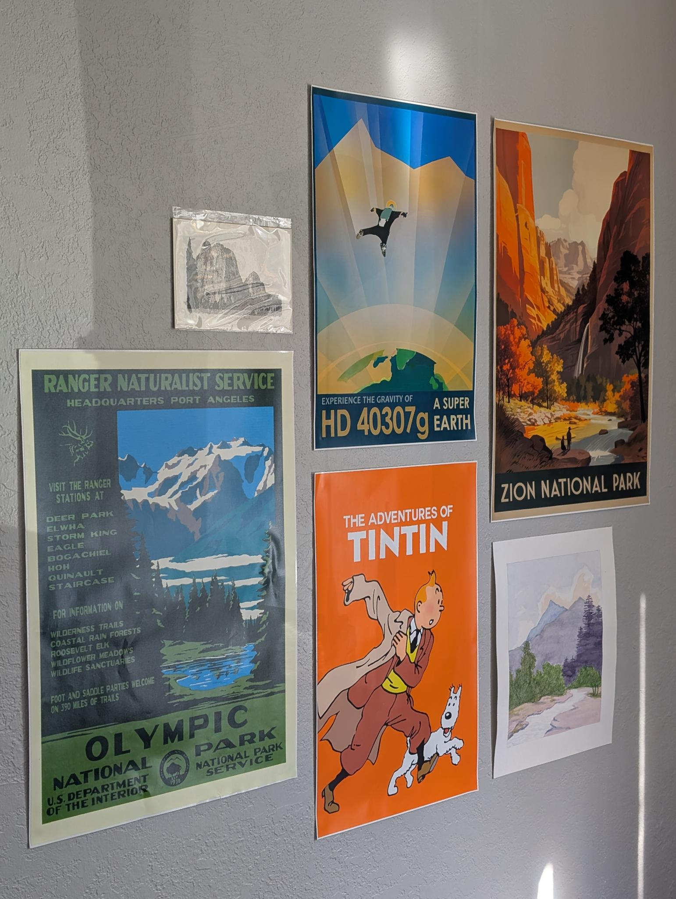
Original (unwarped)
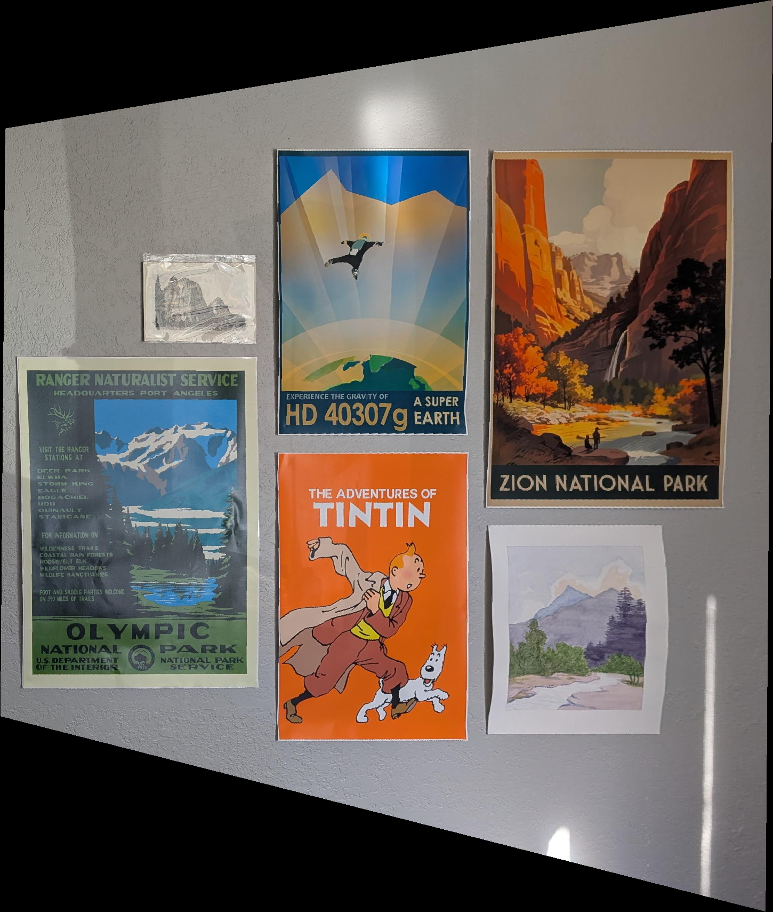
Nearest-neighbor
Bilinear
As you can see, there's little visual difference between the two interpolation schemes: at this resolution, any visual differences are quite small and would lie solely on the pixel level, so they don't show many differences globally. In my profiling, the nearest neighbor interpolation took about 0.22 seconds warping, while bilinear interpolation took about 3 times as long (0.66 seconds). Because of the negligible visual difference, I'll be using nearest neighbor interpolation from here on out for the speed improvement.
Here's another one of my rectified images:
4. Blending the Images into a Mosaic
Finally, let's create an image mosaic, or a panorama! I'll be doing this by projecting one image onto the other image plane, then blending the two.
You may be asking why I need to blend the images, if the overlap between the two should be registering the exact same scene. This is somewhat correct, but we need to account for 3 main things: potential small movements between camera positions (due to my shaking hands), edge artifacts from overlapping images, and automatic camera exposure changes between rotations. Blending the images will allow for a more natural look for the final panorama, as if the image truly is from one single shot.
My method for creating the mosaic was to set one image as the image plane, and then warp another image onto the first plane using the methodology from above. Then, I blended the two images together to form the final mosaic.
To blend the images, I'll be doing weighted averaging using distance transforms. The distance transform essentially provides a mask that tells you how far away you are from the center of one image versus another. By taking the distance transform of each image, then combining them and normalizing each weight to sum to 1, we can get a smooth transition between one image and another: as we get closer to one image, its pixel values take over and we see less and less specific details about the further image. This is simple, but works super well to get rid of small shifts, overlapping edge artifacts, and other visual effects that arise when the overlapping sections are close but not exactly the same.
Here's the final result of the image mosaics:
Correspondence Points
House
Theater
Final Mosaics
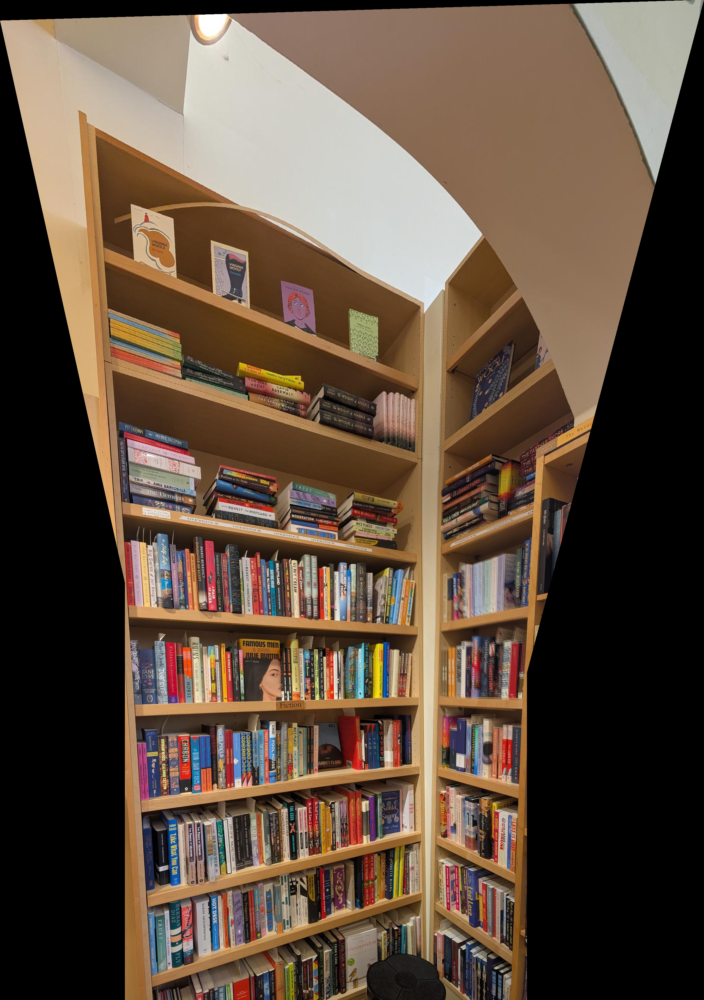
Bookstore
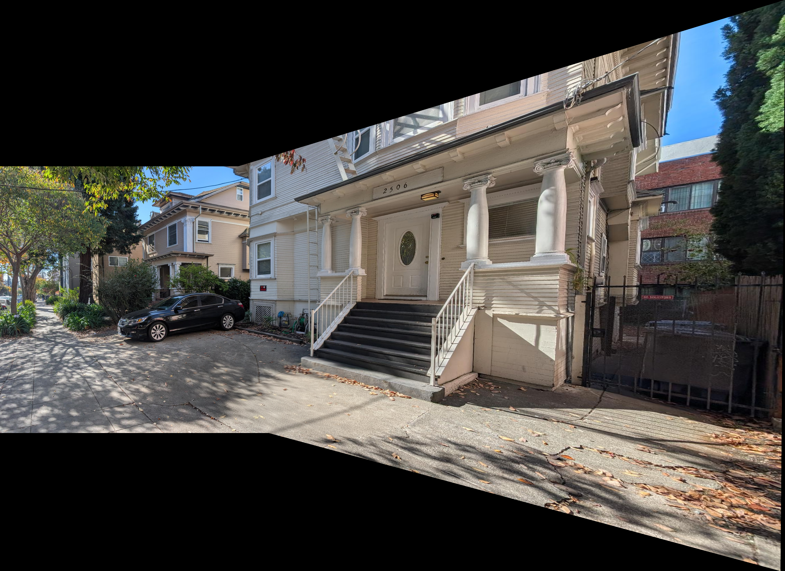
House
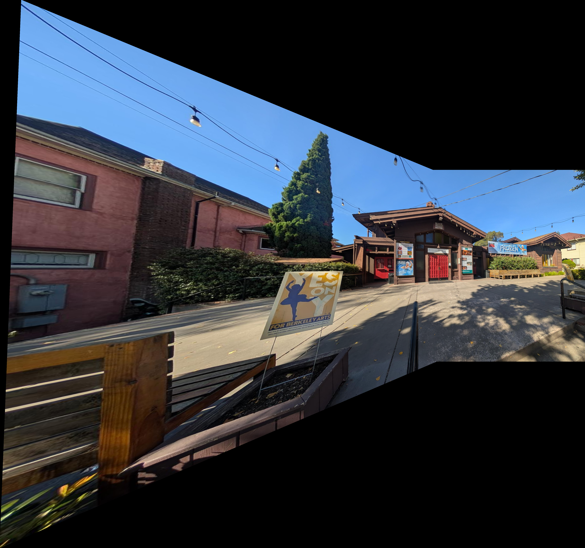
Theater
You can see that the less overlap the images have, the more irregular the final mosaic shape becomes. That's because I'm projecting onto an image plane, which heavily distorts the edges away from the center of where the original image's lens is. If I projected onto a circle/sphere, this problem would be much less pronounced.
Part B: Feature Matching for Autostitching
Manually selecting my own correspondences is kind of annoying. So, I'll now be implementing feature matching to automatically find these correspondence points, and also RANSAC to help find a good homography. Then, I can use the same warping code from before to get fully automatically-generated mosaics! For experimenting with the methodology, I'll be using the two images below:
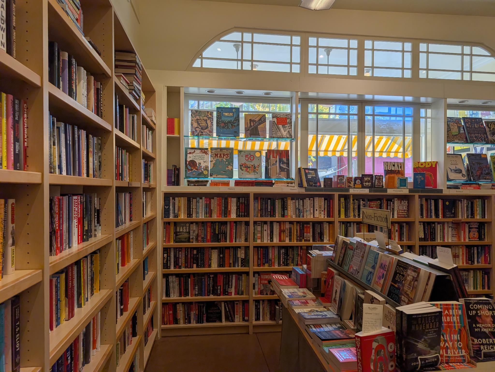
Bookstore, image 1
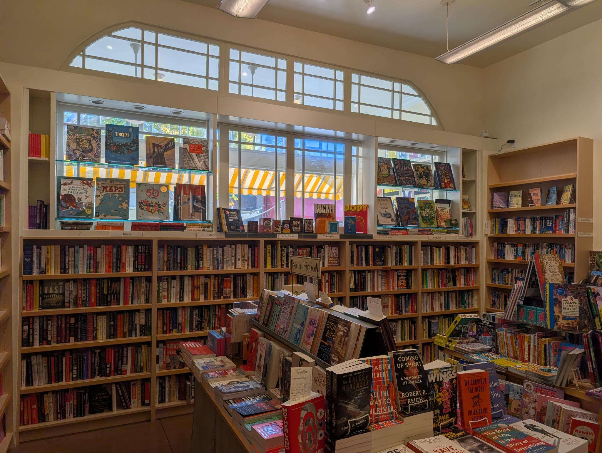
Bookstore, image 2
1. Harris Corner Detection
To identify what would be good correspondence points, we use Harris corners, which are defined as points in the image that have high gradients in both directions. If a pixel has high derivatives in only one direction, then it's an edge (as we showed before), so pixels with high derivatives in both directions must be corners! We can determine \(h(x,y)\), which is the "corner response" of each pixel.
Since we get a corner response for nearly every pixel, we need to tone down the number of corners that we actually care about. The typical way that this is done is by what's called maximal suppression, where we take the \((x,y)\) pairs with the highest \(h\). However, since high \(h\) values tend to cluster around higher-contrast areas of the image, we end up getting a bunch of clustered points. This clustering behavior is unideal since we want to calculate homographies (in which we would like spread out points for less noisy transformations).
I'll be getting around this using adaptive non-maximal suppression, or ANMS for short. First, I'll calculate the radius of each Harris point to the next strongest Harris point. In math terms, this is defined as so:
\[ r_i = \min_j \left\| \mathbf{x}_i - \mathbf{x}_j \right\|_2 \quad \text{s.t.} \quad h(\mathbf{x}_i) < c_{\text{robust}}\, h(\mathbf{x}_j) \]
(4)
Intuitively, this gives the spacing from any "important" Harris point to another "important" Harris point, where the important level is defined by the robustness factor, \(c_{\text{robust}}\). Then, we take the Harris points with the highest \(r_i\) to get our selected Harris points. In effect, this means that we'll be taking the important Harris points that are also spaced out well amongst the whole image.
Here's a comparison of what the largest 150 of these points look like. You can pretty easily see that ANMS gives a more even spread of good corners, which would potentially make good homographies.
2. Feature Descriptor Extraction
Now that we have Harris points, how do we compare the similarity between points in our different images? We'll use image features! The idea of image features is to look at a small area around each of the Harris points. In this case, I'll be doing something a little fancier: taking 8x8 patches by undersampling every 5 pixels, blurring the image beforehand to reduce aliasing, and normalizing the features to account for differences in bias and gain (mean and standard deviation). Here's what these image features look like for the above image:
3. Feature Matching
Now that we have image features for each image, let's match them! The most obvious thing to do would be to find the nearest pixel-by-pixel neighbor of each feature, and match those, but this lets through a lot of incorrect matches. I'll be using Lowe's technique, which assumes that if two features are truly a match, then the second nearest neighbor would be far worse. So, I'll be finding the ratio of the distances between the 1st-nearest-neighbor and the 2nd-nearest-neighbor. This ratio works a lot better for differentiating between a proper match and a bad match. Depending on what worked empirically better for the final mosaic, I typically used a Lowe ratio between 0.3 and 0.5. Here's what a few matched features look like for the above image:
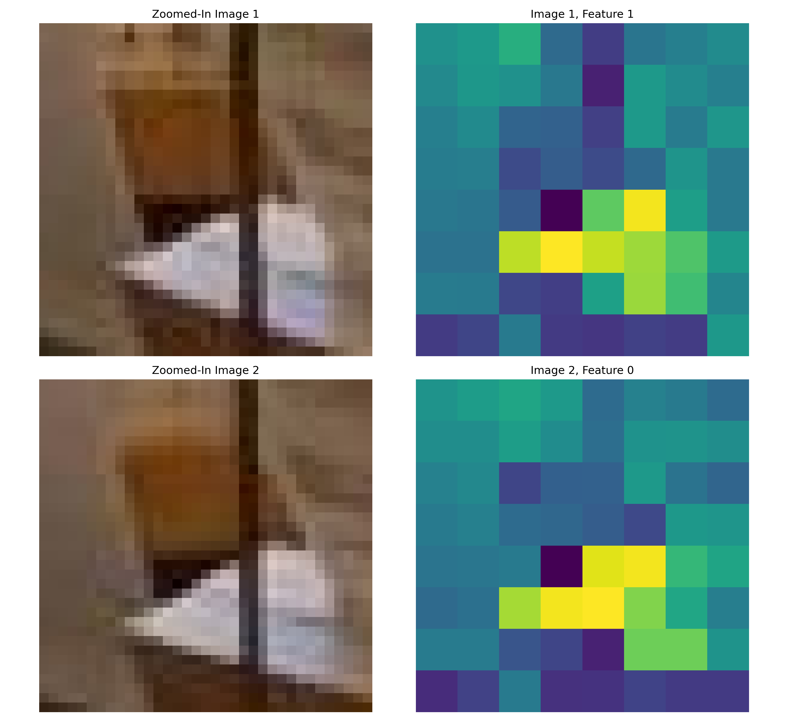
Match 1
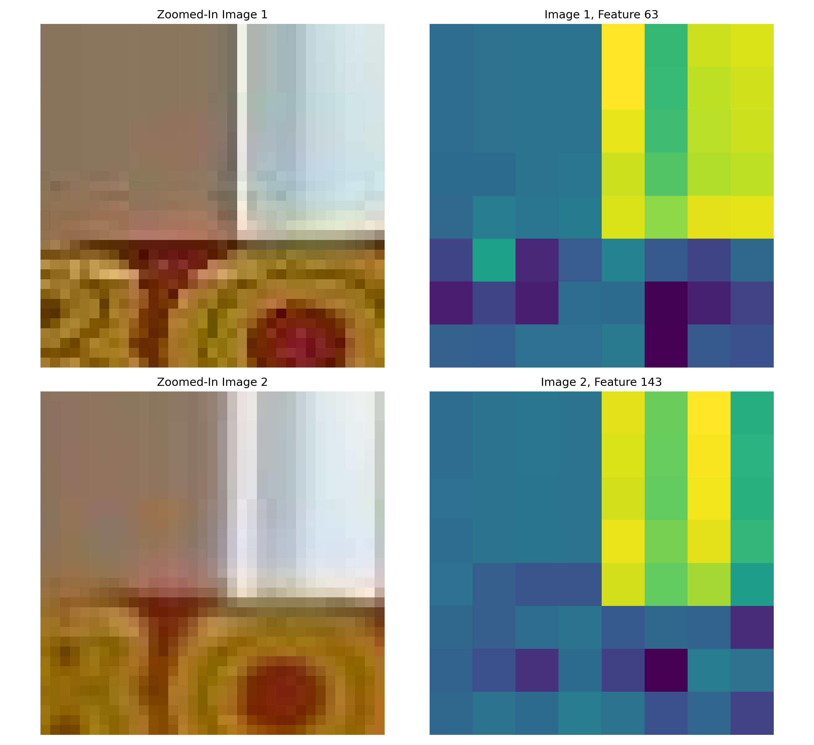
Match 2
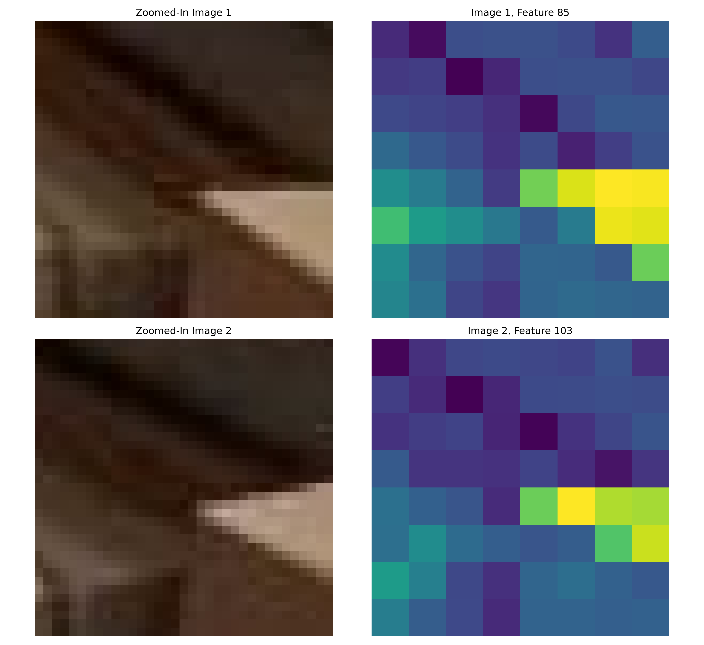
Match 3
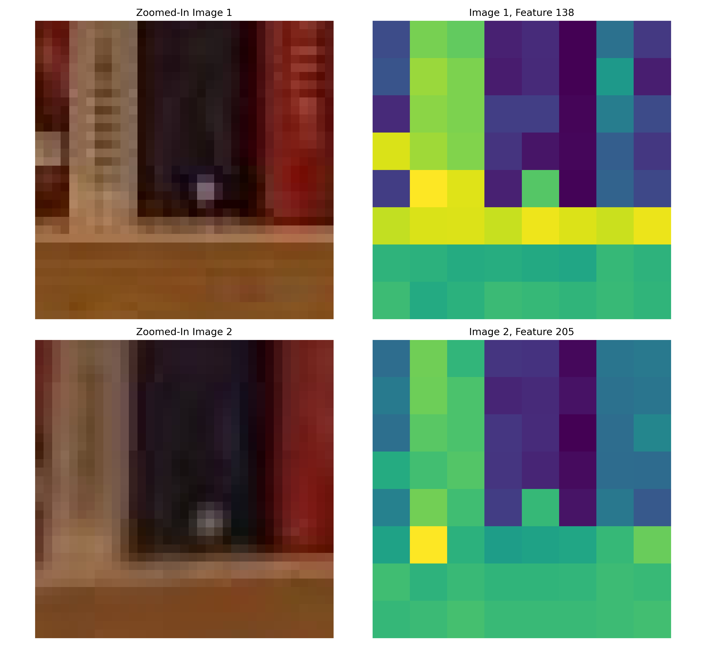
Match 4
4. RANSAC for Robust Homographies
To make good homographies, I'm going to be implementing the RANSAC (RANdom SAmple Consensus) algorithm! Here's a brief outline of the algorithm (for one iteration):
- Select 4 random matched Harris points.
- Construct the homography matrix \(H\) defined by the 4 chosen points.
- Using \(H\), transform all image 2 points into the image 1 space.
- Find the distances between the transformed points and the true image 1 points.
- Classify the number of inliers, defined as how many distances are within some threshold of the true image 1 points.
- If this \(H\) gives more inliers than the previous best \(H\), then replace the previous \(H\) with the new \(H\).
The idea of RANSAC is that if the homography is good, the homography would match up a lot of the chosen points well. By doing a number of iterations (I ended up going with 200), we can get a higher chance of getting a random set of 4 points that give us a good homography. For the above image, here's the final automatically-generated mosaics!
I found that my algorithm typically worked well with between 10-30 matched points, and I was able to get about the same or better homographies on the mosaics from part A. Here's what they look like.
Manual vs. Automatic Mosaics
Bookstore, manual
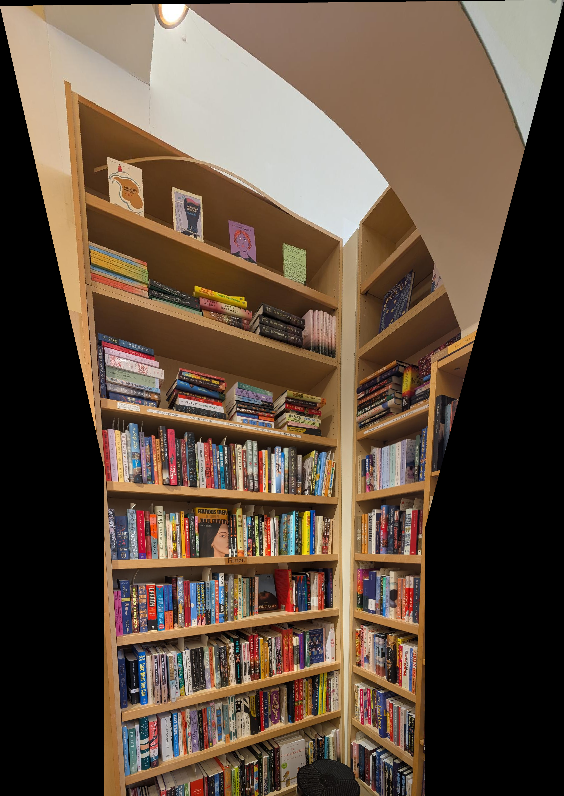
Bookstore, automatic (18 matches, Lowe ratio 0.5)
House, manual
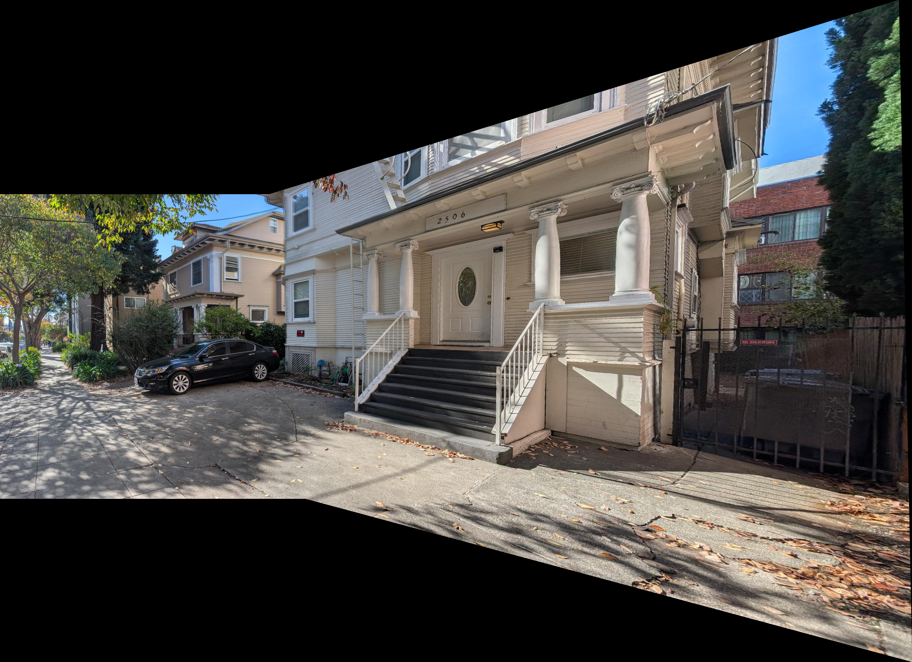
House, automatic (7 matches, Lowe ratio 0.5)
Theater, manual
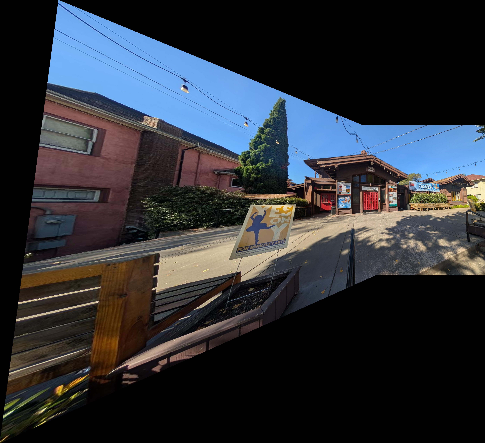
Theater, automatic (8 matches, Lowe ratio 0.3)
You can see that the mosaics overall work well for both! In the bookstore from part A, the automatically-generated mosaic actually did do better, while the theater did somewhat the same. The house seems to have a less aligned mosaic, though. My prediction for this is that the distortion coming from the rotation between the two images shifted the point features enough that there were few good matches. However, this is an isolated case, and in most situations, the automatically generated mosaic did at least as well.